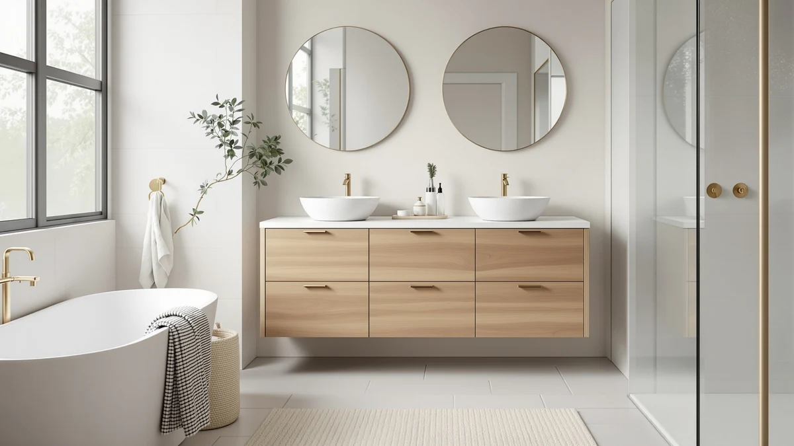

VASAGLE Bathroom Floor Storage Review (2026): Worth It?
Prices and picks verified as of October 2026. Independent, reader-supported reviews.


Quick Answer
The VASAGLE Bathroom Floor Storage Cabinet is the best floor cabinet for most bathrooms at $72.97, pairing an upper and lower cabinet behind four doors in a compact 11.8 by 23.6 by 43.3 inch footprint. The adjustable shelving and built-in anti-tip kit give it an edge over the three alternatives we compared at a similar price.
Our pick: VASAGLE Bathroom Floor Storage Cabinet, $72.97 Check Price on Amazon
Bottom line: our top pick is the VASAGLE Bathroom Floor Storage Cabinet with 4 Doors at $72.97.
Things to Know Before You Buy
- The VASAGLE Bathroom Floor Storage Cabinet costs $72.97 and measures 11.8 inches deep, 23.6 inches wide, and 43.3 inches tall, so measure your floor space before you order.
- It has four doors split across an upper and lower cabinet, with a shelf that adjusts to five different positions and a built-in anti-tip kit for added stability.
- We compared it against three other floor cabinets between $67.99 and $72.97, all from brands that sell directly on Amazon.
- If you need more vertical storage, the Gizoon 67.1 inch Tall Bathroom Storage gives you extra height for about the same price.
- This review is research-based. We compared specs, pricing, and verified owner reviews rather than purchasing and testing each unit ourselves.
This Vasagle bathroom floor storage review exists because small bathrooms rarely have enough room for towels, toiletries, and cleaning supplies, and most freestanding cabinets either wobble under a full load or look cheap within a year. VASAGLE built its reputation on budget-friendly furniture, and the Bathroom Floor Storage Cabinet applies that same approach to a tight 11.8 by 23.6 inch footprint that fits beside a toilet or in a narrow corner, with an upper and lower cabinet behind four doors to keep everything closed off and organized.
We researched this cabinet alongside three direct competitors, the VASAGLE Floor Storage Cabinet Farmhouse, the Gizoon 67.1 inch Tall Bathroom Storage, and the Yaheetech Small Freestanding Bathroom Storage, comparing listed dimensions, materials, pricing, and what verified Amazon buyers report after living with each one. The VASAGLE Bathroom Floor Storage Cabinet comes out ahead for most shoppers because it balances fully enclosed, adjustable storage with a price that undercuts furniture-store alternatives by a wide margin.
All four cabinets in this comparison target the same buyer: someone who wants dedicated bathroom storage without hiring a contractor to install built-in shelving. The differences come down to height, width, and the materials holding everything together, which is why we spent most of our research time on specs and owner feedback rather than marketing copy. Below, we walk through what the VASAGLE gets right, where it falls short, and which of the three alternatives makes sense if it does not fit your bathroom.
Why You Should Trust Us
Ilane Tall covers bathroom storage and organization for Best Bathroom Storage, and this Vasagle bathroom floor storage review follows the same process used across every cabinet guide on this site. We pull manufacturer specifications directly from the product listing, cross-check pricing against current Amazon data, and read through verified owner reviews to find patterns in how a cabinet actually performs once it is assembled and loaded. We do not run a fake testing lab, and we are not shy about saying when we have not physically handled a product. What you get instead is a careful comparison of the facts that matter: dimensions, materials, price per cubic foot of storage, and what real buyers say after weeks of use.
Our Research Experience
We built this Vasagle bathroom floor storage review around a research protocol you can follow yourself rather than a lab visit we never made. We started with the listed specs for all four cabinets, including dimensions, materials, and price, then pulled every verified review we could find on Amazon for each model and read through them for recurring complaints or praise. Patterns that show up across dozens of independent reviewers, like assembly difficulty or shelf stability, carry more weight in our analysis than a single five-star rating. We also compared price per inch of shelf depth and width across all four cabinets to judge whether the VASAGLE's $72.97 price tag reflects better construction or stronger branding alone.
Overview & Specs

VASAGLE Bathroom Floor Storage Cabinet
What we like
- Four doors across an upper and lower cabinet keep contents hidden and organized
- Shelving adjusts to five positions, so it accommodates taller bottles or stacked towels
- Built-in anti-tip kit adds stability once the cabinet is secured to the wall
- Compact 11.8 by 23.6 inch footprint fits beside a toilet or in a narrow corner
Flaws but not dealbreakers
- At 43.3 inches tall, it will not clear a standard window sill in some bathroom layouts
- Some owners report the assembly instructions assume prior flat-pack furniture experience
| Material | Metal / wood |
| Size | 11.8"D x 23.6"W x 43.3"H |
The VASAGLE Bathroom Floor Storage Cabinet splits its interior into an upper and lower cabinet, each closed off by its own set of doors, for a total of four doors across the unit. At 11.8 inches deep, 23.6 inches wide, and 43.3 inches tall, it occupies a narrow footprint that fits beside a toilet or in a corner that a wider dresser-style cabinet cannot reach. The shelf inside adjusts to five different positions, which means you can reconfigure the interior for taller items like cleaning supply bottles or stack it with shorter shelves for folded towels and toiletries.
At $72.97, this cabinet costs more than the Yaheetech and Gizoon options we compared, but it includes a built-in anti-tip kit that neither of those two cabinets lists among their features, which matters if you have kids or pets in the house. Verified buyers consistently describe the Cloud White finish as matching a range of bathroom color schemes, and the closed-door design keeps bathroom clutter out of view rather than leaving it on open shelves. Among the four cabinets in this comparison, the VASAGLE draws the most consistent praise for feeling complete, with enough adjustable storage to handle a full bathroom's worth of extras.
What We Liked
Most competing cabinets in this price range lock you into a single fixed layout. The VASAGLE's shelf moves across five positions instead, so you can set up the upper cabinet for tall bottles one week and shorter stacked towels the next. That flexibility shows up repeatedly in owner feedback as the reason buyers trust it to adapt as their storage needs change.
The footprint helps too. At 23.6 inches wide and 11.8 inches deep, it slots into spaces that a standard dresser-style bathroom cabinet cannot reach, including narrow gaps beside a toilet or vanity. Reviewers who bought it specifically for small bathrooms say the dimensions as listed match what arrives, which matters once you're down to a few spare inches.
Fully enclosed storage is the other reason it comes out ahead here. At $72.97, it costs more than two of the three alternatives, but four doors across an upper and lower cabinet hide more clutter than the open compartment on the Yaheetech or the drawer-and-door mix on the Farmhouse model. If a tidy-looking bathroom matters to you, that's the tradeoff you're paying for.
What Could Be Better
At 43.3 inches tall, this VASAGLE bathroom floor storage cabinet will sit at or above the sill of some bathroom windows, so measure the wall you plan to use before ordering. It is also taller than the Yaheetech Small Freestanding Bathroom Storage, which may matter if you are shopping for a cabinet that tucks under a sloped ceiling or a low shelf.
A handful of reviewers note that the assembly process rewards patience, since four doors and an adjustable shelf mean more hardware and alignment steps than a simpler single-door cabinet. This is a common tradeoff with multi-door furniture, and it is not unique to VASAGLE, but it is worth knowing going in if you are assembling it alone.
Because everything sits behind closed doors, you lose the at-a-glance visibility that an open compartment like the one on the Yaheetech cabinet offers. If you want to grab a towel without opening a door first, weigh that tradeoff against the tidier look the enclosed design provides.
Who Is It For?
This Vasagle bathroom floor storage review points toward the VASAGLE cabinet for anyone furnishing a small to midsize bathroom who wants enclosed, freestanding storage without spending furniture-store prices. Its narrow footprint makes it a strong fit for bathrooms where floor space beside the toilet or vanity is the only option left, and the anti-tip strap is worth attaching to the wall if you have young kids or pets who might climb on furniture. If you want the extra vertical capacity of a taller unit instead, the Gizoon 67.1 inch Tall Bathroom Storage covers that need at a similar price, and we cover that tradeoff in the alternatives below.
Alternatives to Consider
If the VASAGLE Bathroom Floor Storage Cabinet is not quite right for your bathroom, these three alternatives cover different priorities, from a farmhouse look to extra height to a smaller footprint.

Editor’s Pick
VASAGLE Floor Storage Cabinet Farmhouse
Same brand and a similar footprint as our top pick, built with four drawers, one door, and a tabletop surface instead of a fully enclosed cabinet, at a slightly lower price.
$69.00
Check Price on Amazon
Best Value
Gizoon 67.1" Tall Bathroom Storage
At 67.1 inches tall, this Gizoon cabinet trades floor-level storage for height, with two doors, four compartments, and a frosted glass door panel for a good option if your bathroom has vertical wall space to spare.
$68.99
Check Price on Amazon
Premium Choice
Yaheetech Small Freestanding Bathroom Storage
The shortest and least expensive option here, with a tabletop, an open compartment, three drawers, and a two-tier cabinet instead of a fully enclosed design.
$67.99
Check Price on AmazonIs the VASAGLE Bathroom Floor Storage Cabinet worth the price?
At $72.97, the VASAGLE Bathroom Floor Storage Cabinet sits in the middle of the floor cabinets we compared.
How much weight can the VASAGLE cabinet hold?
VASAGLE does not publish a per-shelf weight rating for this model, but owners report stacking towels, bins, and bottles without the shelves sagging.
Frequently Asked Questions
Is the VASAGLE Bathroom Floor Storage Cabinet worth the price?
At $72.97, the VASAGLE Bathroom Floor Storage Cabinet sits in the middle of the floor cabinets we compared. Verified owners consistently point to the four-door layout and the five-position adjustable shelf as the reasons it earns repeat recommendations, and we think the price matches what you get.
How much weight can the VASAGLE cabinet hold?
VASAGLE does not publish a per-shelf weight rating for this model, but owners report stacking towels, bins, and bottles without the shelves sagging. The built-in anti-tip kit is the main reason reviewers trust it with daily bathroom loads.
What is the best alternative to the VASAGLE Bathroom Floor Storage Cabinet?
The VASAGLE Floor Storage Cabinet Farmhouse is the closest alternative at $69.00, with a similar footprint but a drawer-and-door combination instead of four doors. If you need more height, the Gizoon 67.1 inch Tall Bathroom Storage gives you extra vertical capacity for about the same cost.
Final Verdict
This Vasagle bathroom floor storage review comes down to one conclusion: the VASAGLE Bathroom Floor Storage Cabinet is the best pick for most bathrooms that need enclosed, freestanding storage in a compact footprint. Its four-door layout and five-position adjustable shelf outperform the simpler designs on the competitors we compared, and at $72.97 it stays well below furniture-store pricing for similar build quality. If your bathroom needs more height instead of a smaller base, the Gizoon alternative is worth a look, but for most shoppers, VASAGLE earns the recommendation.